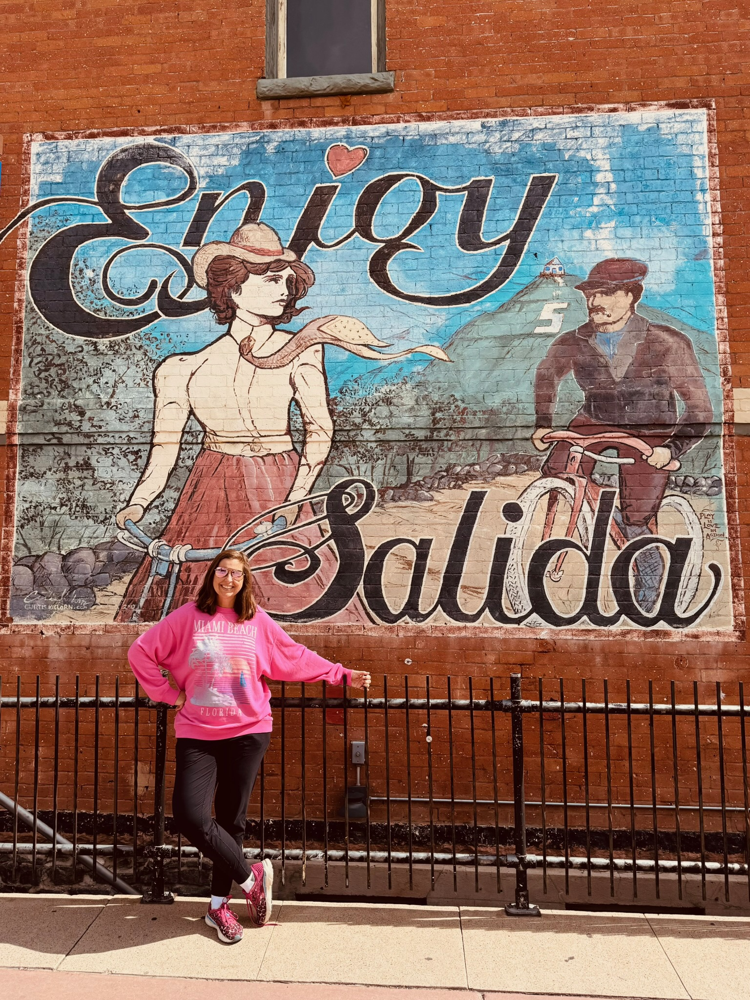
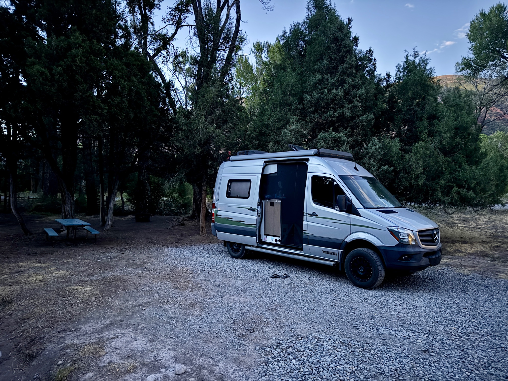
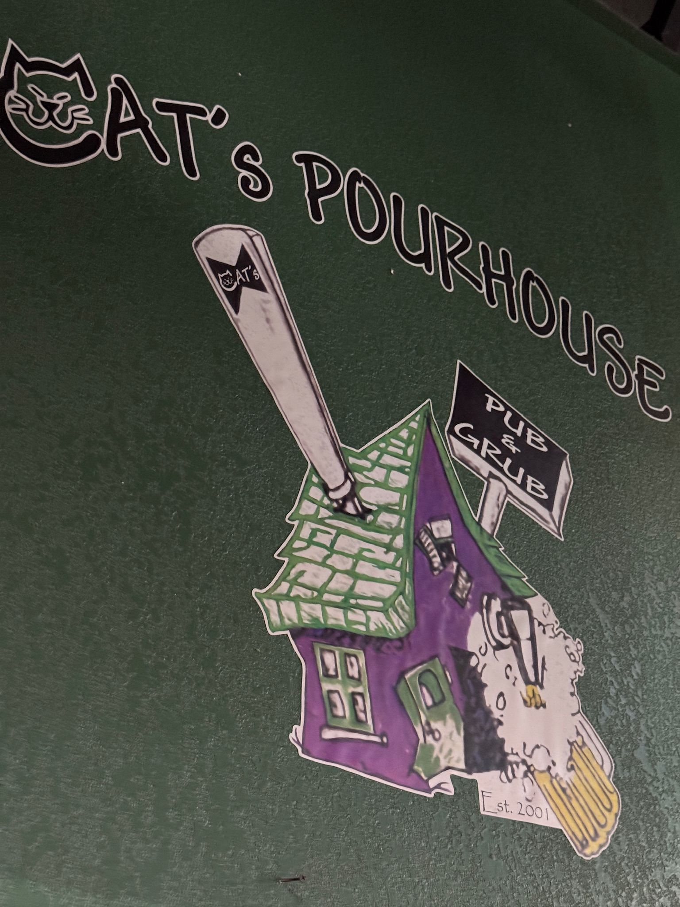

A birthday celebration launched a “full-scale model” for PourHouse
Spencer called and invited us to join him for a birthday in Ouray. Immediately, that weekend plan spun up to a full expedition. We discovered that U.S. 50 runs from Cincinnati to Pueblo. So we traveled roughly 1,300 miles “without turning,” and then drove every scenic highway in southern Colorado. We had already used PourHouse for overnights and several out and back road trips. This would be our first long-distance travel, and real-world testing.

Southern Colorado has mind-bending scenic roads
We drove the Million Dollar Highway, Last Dollar Road, San Juan Skyway, Los Caminos Antiguos, Highway of Legends, Tracks Across Borders, and Frontier Pathways. We got to visit the Garden of the Gods, Colorado Springs, Great Sand Dunes, Zapata Falls, Royal Gorge, and Durango. Spencer and Ria met us for a long weekend in Ouray, where we stayed in a hotel. We also saw a bear walking down a street in Ouray.


We finally hit the 4x4 button - now we had tested everything
The Uncompahgre National Forest delivered a small but symbolic milestone. A route finally required the first deliberate push of PourHouse’s 4x4 button. Earlier trips had repeatedly ended at signs the minivan could not pass. This time, the capable Alaska rig we had imagined was underneath us. We learned that our machine has great bones, but it would need upgrades for our Alaskan plans.
SoCoEx was not only about testing PourHouse’s mechanical and electrical systems. We were testing how to pack it, how to sleep for multiple consecutive nights, how to live off grid, and how the new 360 camera could document the roads around us. Our first off-grid night was Federal Land near Mount Blanca. Free-range cattle surrounded PourHouse, creating a fun photography session and a scene we’ll never forget.
We learned a lot. Mostly, we learned that PourHouse was our platform. It wasn’t perfect, but it met or exceeded our expectations. We felt that we were ready to stretch our limits.